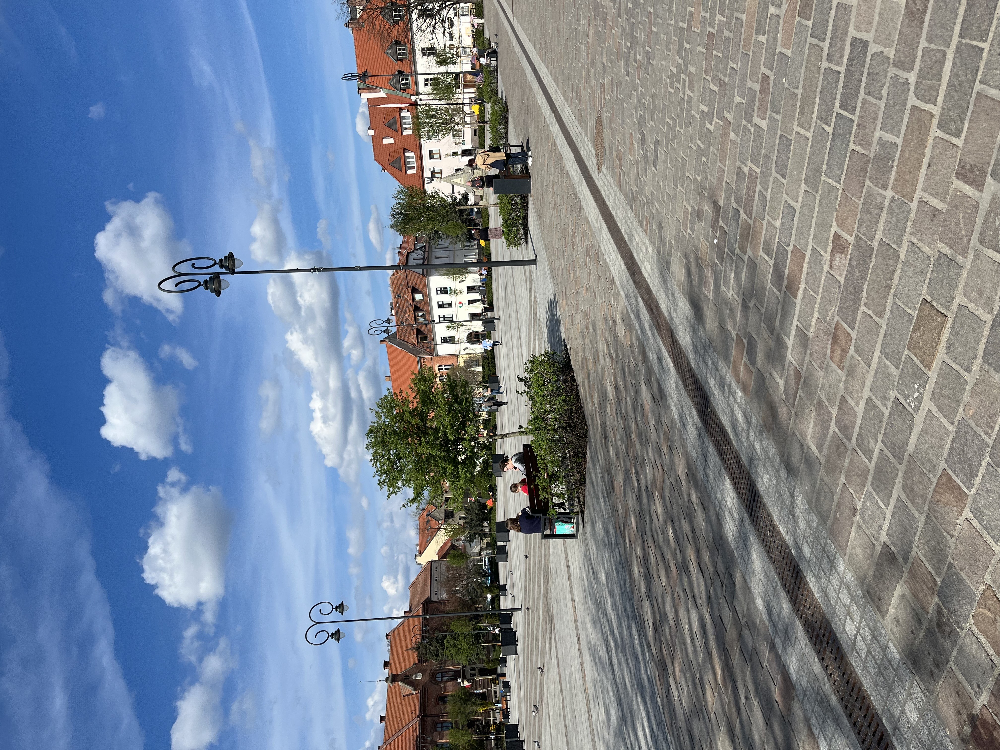
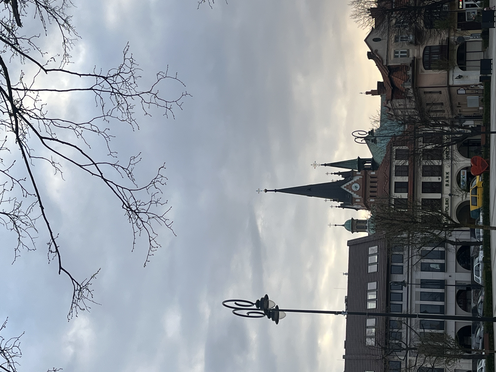
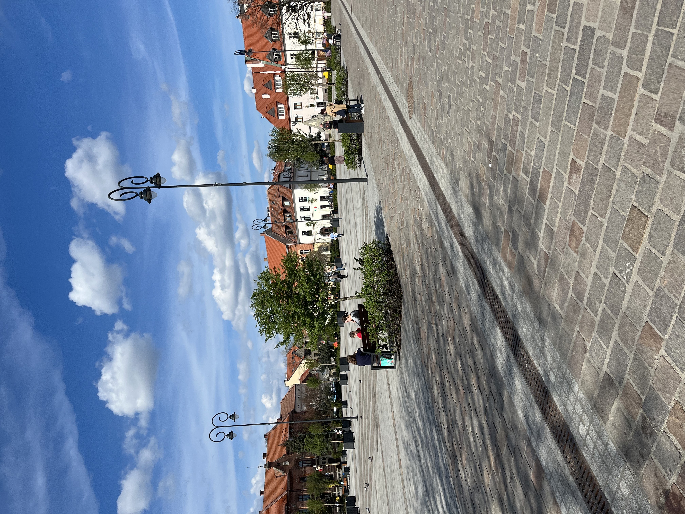
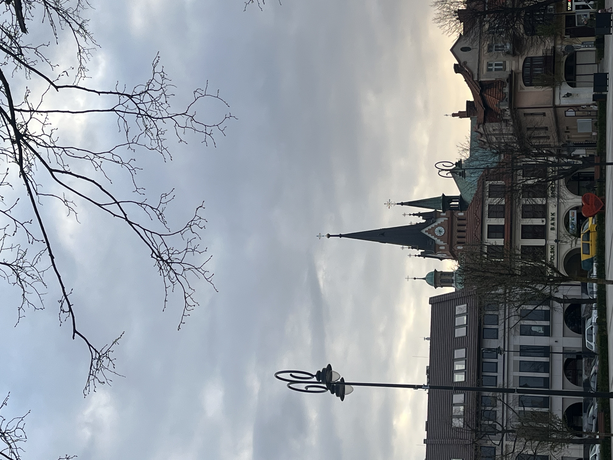

Rynek w Myślenicach to centralna część miasta, które ma długą historię sięgającą XIV wieku. Jest to miejsce, które łączy tradycję z nowoczesnością, stanowiąc ważny punkt spotkań i wydarzeń społecznych. Wokół Rynku znajdują się historyczne kamienice, a także współczesne sklepy i restauracje. To popularne miejsce spacerów mieszkańców i turystów, z klimatyczną atmosferą, zwłaszcza latem, kiedy organizowane są różne imprezy kulturalne.
 


